Changes in PRIMAP-hist v2.6.1_final compared to v2.6_final for Viet Nam
2025-03-19
Johannes Gütschow
Change analysis for Viet Nam for PRIMAP-hist v2.6.1_final compared to v2.6_final
Overview over emissions by sector and gas
The following figures show the aggregate national total emissions excluding LULUCF AR6GWP100 for the country reported priority scenario. The dotted linesshow the v2.6_final data.
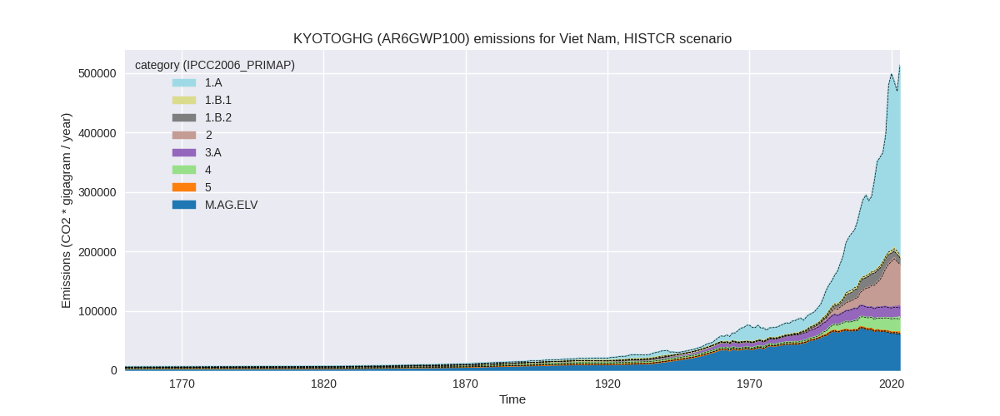

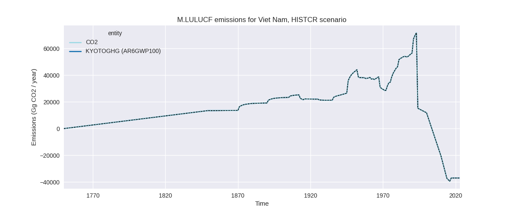
The following figures show the aggregate national total emissions excluding LULUCF AR6GWP100 for the third party priority scenario. The dotted linesshow the v2.6_final data.
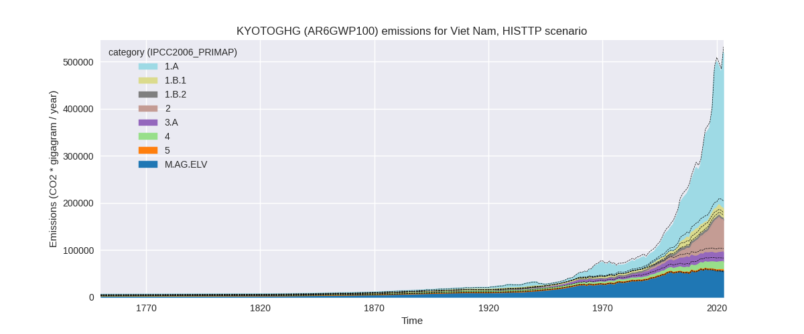
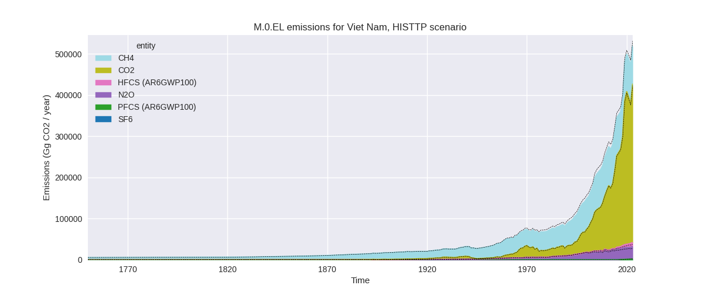
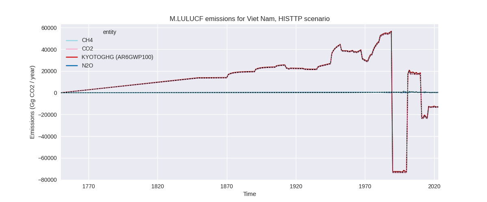
Overview over changes
In the country reported priority scenario we have the following changes for aggregate Kyoto GHG and national total emissions excluding LULUCF (M.0.EL):
- Emissions in 2023 have changed by 0.1%% (305.17 Gg CO2 / year)
- Emissions in 1990-2023 have changed by -0.1%% (-189.83 Gg CO2 / year)
In the third party priority scenario we have the following changes for aggregate Kyoto GHG and national total emissions excluding LULUCF (M.0.EL):
- Emissions in 2023 have changed by -2.3%% (-11998.92 Gg CO2 / year)
- Emissions in 1990-2023 have changed by -4.0%% (-10320.18 Gg CO2 / year)
Most important changes per scenario and time frame
In the country reported priority scenario the following sector-gas combinations have the highest absolute impact on national total KyotoGHG (AR6GWP100) emissions in 2023 (top 5):
- 1: 2, CO2 with -3748.34 Gg CO2 / year (-5.1%)
- 2: 4, CH4 with 1334.32 Gg CO2 / year (6.4%)
- 3: 1.B.2, CH4 with 1285.18 Gg CO2 / year (13.2%)
- 4: 1.B.1, CH4 with -787.45 Gg CO2 / year (-17.4%)
- 5: M.AG.ELV, CO2 with 772.19 Gg CO2 / year (85.5%)
In the country reported priority scenario the following sector-gas combinations have the highest absolute impact on national total KyotoGHG (AR6GWP100) emissions in 1990-2023 (top 5):
- 1: 2, CO2 with -207.23 Gg CO2 / year (-0.7%)
- 2: 4, CH4 with 124.65 Gg CO2 / year (1.0%)
- 3: 1.B.2, CH4 with -105.64 Gg CO2 / year (-1.1%)
- 4: 5, N2O with -71.99 Gg CO2 / year (-6.5%)
- 5: M.AG.ELV, CO2 with 63.07 Gg CO2 / year (5.3%)
In the third party priority scenario the following sector-gas combinations have the highest absolute impact on national total KyotoGHG (AR6GWP100) emissions in 2023 (top 5):
- 1: 4, CH4 with -10075.10 Gg CO2 / year (-39.0%)
- 2: 1.A, N2O with 4068.34 Gg CO2 / year (180.6%)
- 3: 1.B.1, CH4 with -3866.29 Gg CO2 / year (-16.0%)
- 4: 2, CO2 with -2481.99 Gg CO2 / year (-4.2%)
- 5: 1.B.2, CH4 with -2187.03 Gg CO2 / year (-51.3%)
In the third party priority scenario the following sector-gas combinations have the highest absolute impact on national total KyotoGHG (AR6GWP100) emissions in 1990-2023 (top 5):
- 1: 4, CH4 with -8470.72 Gg CO2 / year (-47.1%)
- 2: 1.B.2, CH4 with -2546.32 Gg CO2 / year (-41.9%)
- 3: 1.A, N2O with 993.79 Gg CO2 / year (74.2%)
- 4: 2, CO2 with -394.44 Gg CO2 / year (-1.7%)
- 5: M.AG.ELV, CO2 with 99.71 Gg CO2 / year (4.7%)
Notes on data changes
Here we list notes explaining important emissions changes for the country.
- No new country reported data has been included. Changes in the CR time-series are relatively small and come from updated third party data (EDGAR, FAO) which is used to extrapolate the country reported data.
- Changes in the TP time-series come from updated EDGAR data where full time-series have been updated. The main changes come from the waste sector and the energy sector (non-CO2).
Changes by sector and gas
For each scenario and time frame the changes are displayed for all individual sectors and all individual gases. In the sector plot we use aggregate Kyoto GHGs in AR6GWP100. In the gas plot we usenational total emissions without LULUCF.
country reported scenario
2023
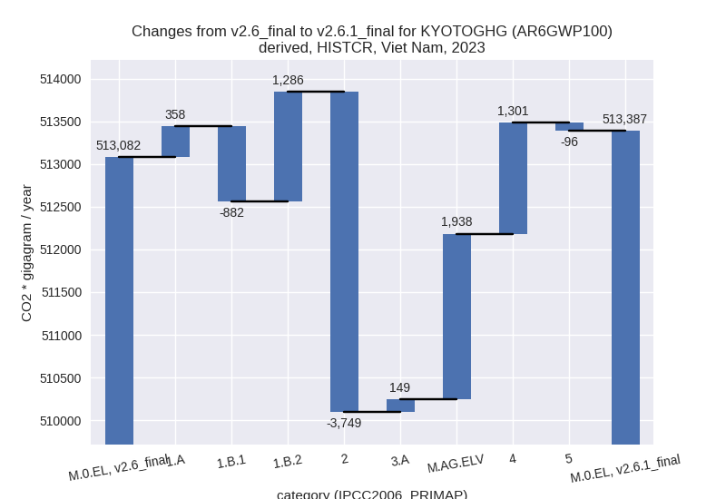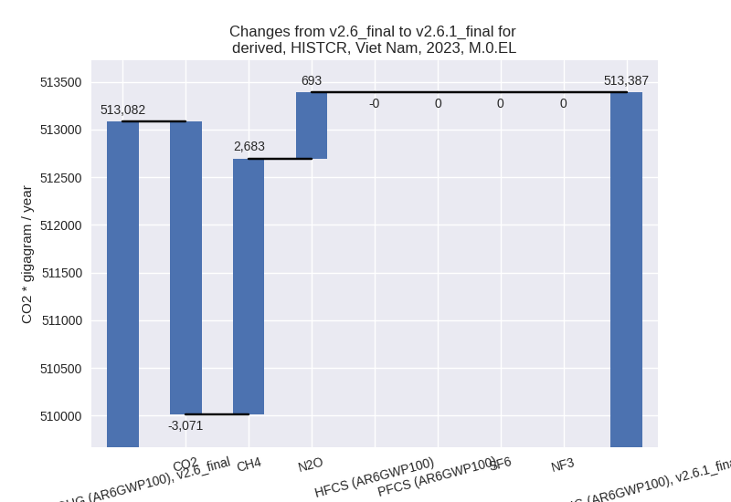
1990-2023
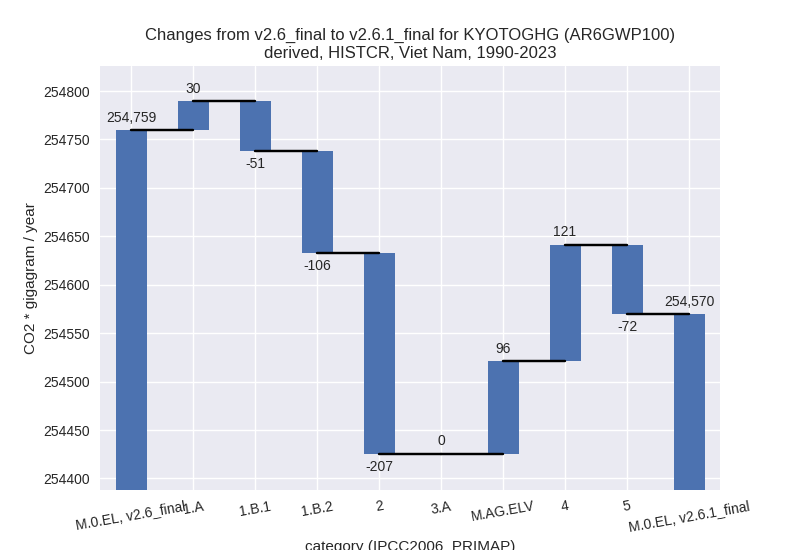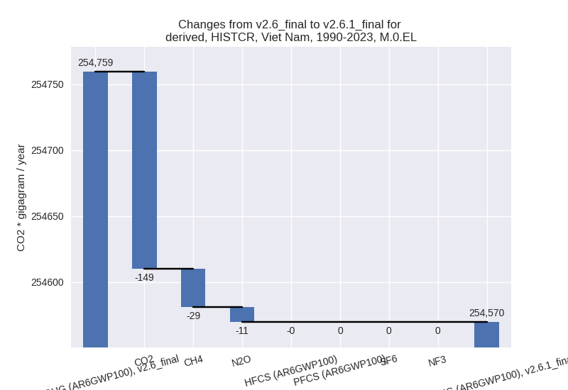
third party scenario
2023
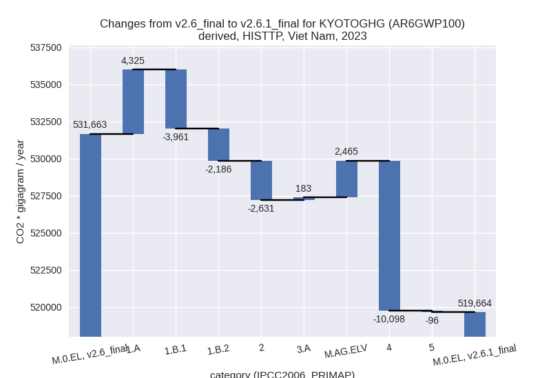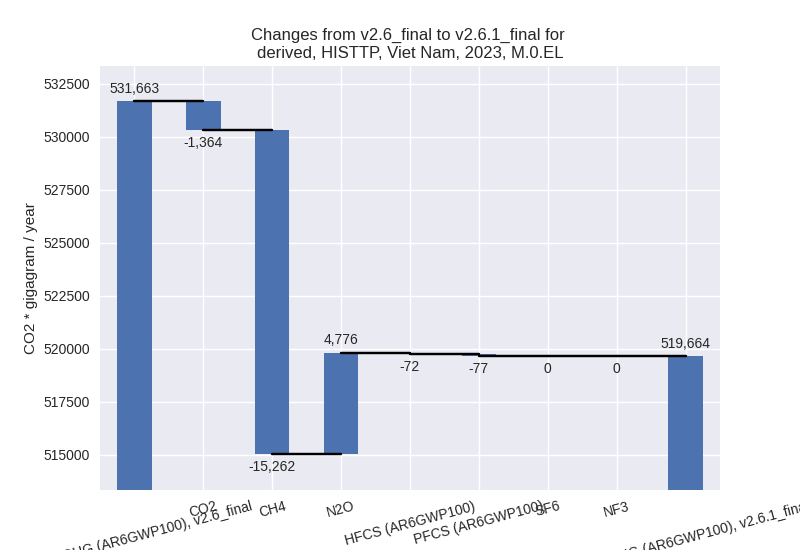
1990-2023
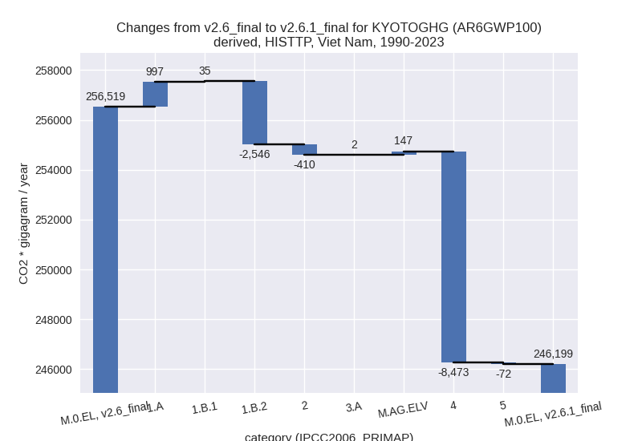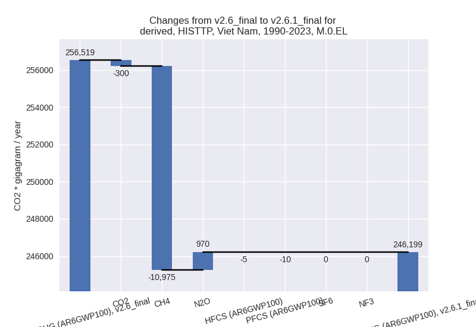
Detailed changes for the scenarios:
country reported scenario (HISTCR):
Most important changes per time frame
For 2023 the following sector-gas combinations have the highest absolute impact on national total KyotoGHG (AR6GWP100) emissions in 2023 (top 5):
- 1: 2, CO2 with -3748.34 Gg CO2 / year (-5.1%)
- 2: 4, CH4 with 1334.32 Gg CO2 / year (6.4%)
- 3: 1.B.2, CH4 with 1285.18 Gg CO2 / year (13.2%)
- 4: 1.B.1, CH4 with -787.45 Gg CO2 / year (-17.4%)
- 5: M.AG.ELV, CO2 with 772.19 Gg CO2 / year (85.5%)
For 1990-2023 the following sector-gas combinations have the highest absolute impact on national total KyotoGHG (AR6GWP100) emissions in 1990-2023 (top 5):
- 1: 2, CO2 with -207.23 Gg CO2 / year (-0.7%)
- 2: 4, CH4 with 124.65 Gg CO2 / year (1.0%)
- 3: 1.B.2, CH4 with -105.64 Gg CO2 / year (-1.1%)
- 4: 5, N2O with -71.99 Gg CO2 / year (-6.5%)
- 5: M.AG.ELV, CO2 with 63.07 Gg CO2 / year (5.3%)
Changes in the main sectors for aggregate KyotoGHG (AR6GWP100) are
- 1: Total sectoral emissions in 2022 are 285985.57 Gg CO2 / year which is 61.3% of M.0.EL emissions. 2023 Emissions have changed by 0.2% (762.00 Gg CO2 / year). 1990-2023 Emissions have changed by -0.1% (-127.04 Gg CO2 / year).
- 2: Total sectoral emissions in 2022 are 73947.85 Gg
CO2 / year which is 15.8% of M.0.EL emissions. 2023 Emissions have
changed by -5.1% (-3748.73 Gg CO2 /
year). 1990-2023 Emissions have changed by -0.7% (-207.26 Gg CO2 / year). For 2023
the changes per gas
are:
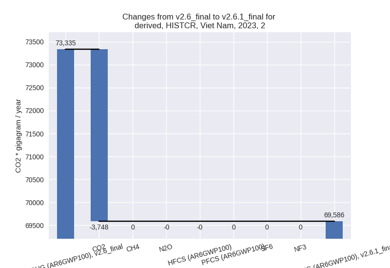 - M.AG: Total sectoral emissions in 2022 are 80616.28
Gg CO2 / year which is 17.3% of M.0.EL emissions. 2023 Emissions have
changed by 2.6% (2087.20 Gg CO2 /
year). 1990-2023 Emissions have changed by 0.1% (95.77 Gg CO2 / year). For 2023 the
changes per gas
are:
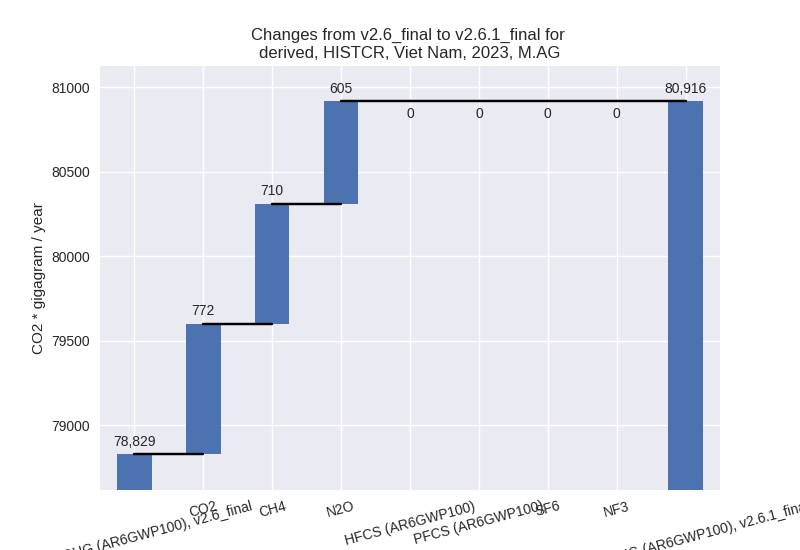
The changes come from the following subsectors:- 3.A: Total sectoral emissions in 2022 are 18723.71 Gg CO2 / year which is 23.2% of category M.AG emissions. 2023 Emissions have changed by 0.8% (149.13 Gg CO2 / year). 1990-2023 Emissions have changed by 0.0% (0.26 Gg CO2 / year).
- M.AG.ELV: Total sectoral emissions in 2022 are
61892.57 Gg CO2 / year which is 76.8% of category M.AG emissions. 2023
Emissions have changed by 3.2%
(1938.07 Gg CO2 / year). 1990-2023 Emissions have changed by 0.2% (95.51 Gg CO2 / year). For 2023 the
changes per gas
are:
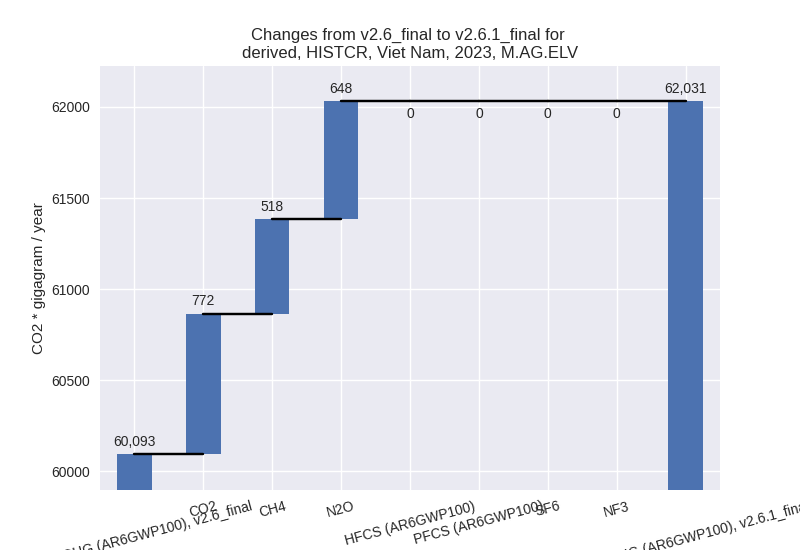
There is no subsector information available in PRIMAP-hist.
- 4: Total sectoral emissions in 2022 are 24544.95 Gg
CO2 / year which is 5.3% of M.0.EL emissions. 2023 Emissions have
changed by 5.4% (1300.72 Gg CO2 /
year). 1990-2023 Emissions have changed by 0.9% (120.68 Gg CO2 / year). For 2023 the
changes per gas
are:
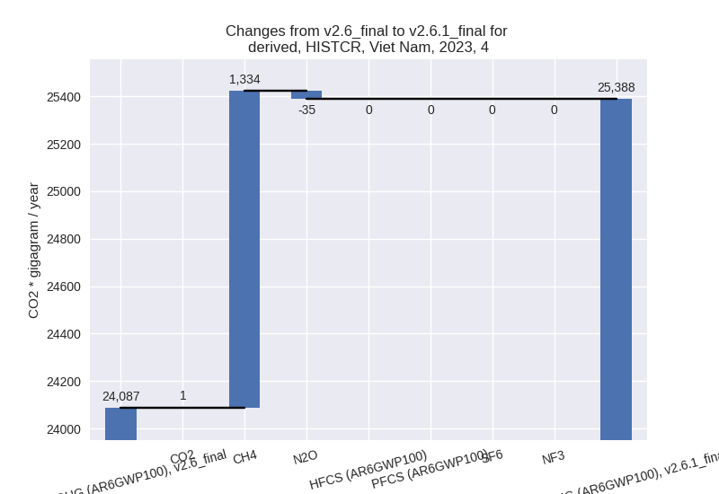 - 5: Total sectoral emissions in 2022 are 1736.65 Gg
CO2 / year which is 0.4% of M.0.EL emissions. 2023 Emissions have
changed by -4.5% (-96.02 Gg CO2 /
year). 1990-2023 Emissions have changed by -6.5% (-71.99 Gg CO2 / year). For 2023 the
changes per gas
are:
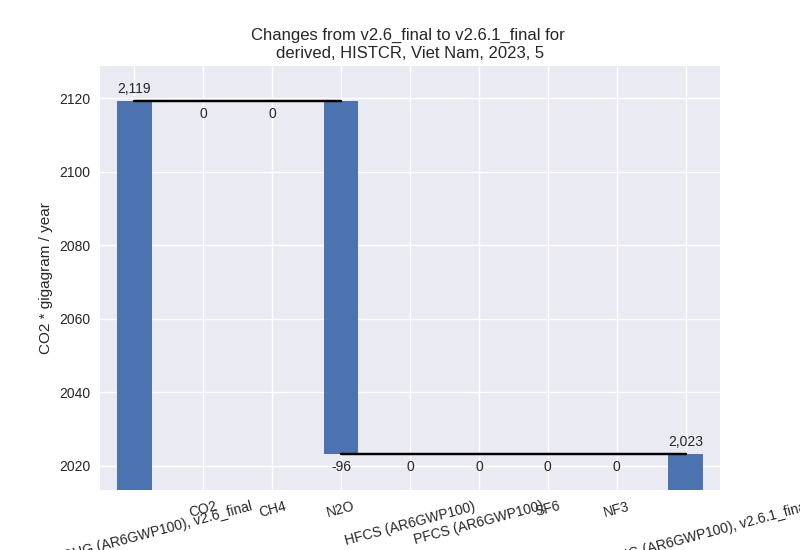
For 1990-2023 the changes per gas are:
third party scenario (HISTTP):
Most important changes per time frame
For 2023 the following sector-gas combinations have the highest absolute impact on national total KyotoGHG (AR6GWP100) emissions in 2023 (top 5):
- 1: 4, CH4 with -10075.10 Gg CO2 / year (-39.0%)
- 2: 1.A, N2O with 4068.34 Gg CO2 / year (180.6%)
- 3: 1.B.1, CH4 with -3866.29 Gg CO2 / year (-16.0%)
- 4: 2, CO2 with -2481.99 Gg CO2 / year (-4.2%)
- 5: 1.B.2, CH4 with -2187.03 Gg CO2 / year (-51.3%)
For 1990-2023 the following sector-gas combinations have the highest absolute impact on national total KyotoGHG (AR6GWP100) emissions in 1990-2023 (top 5):
- 1: 4, CH4 with -8470.72 Gg CO2 / year (-47.1%)
- 2: 1.B.2, CH4 with -2546.32 Gg CO2 / year (-41.9%)
- 3: 1.A, N2O with 993.79 Gg CO2 / year (74.2%)
- 4: 2, CO2 with -394.44 Gg CO2 / year (-1.7%)
- 5: M.AG.ELV, CO2 with 99.71 Gg CO2 / year (4.7%)
Changes in the main sectors for aggregate KyotoGHG (AR6GWP100) are
- 1: Total sectoral emissions in 2022 are 304607.22 Gg CO2 / year which is 64.8% of M.0.EL emissions. 2023 Emissions have changed by -0.5% (-1822.04 Gg CO2 / year). 1990-2023 Emissions have changed by -1.1% (-1513.96 Gg CO2 / year).
- 2: Total sectoral emissions in 2022 are 70559.67 Gg
CO2 / year which is 15.0% of M.0.EL emissions. 2023 Emissions have
changed by -3.7% (-2631.18 Gg CO2 /
year). 1990-2023 Emissions have changed by -1.5% (-409.89 Gg CO2 / year). For 2023
the changes per gas
are:
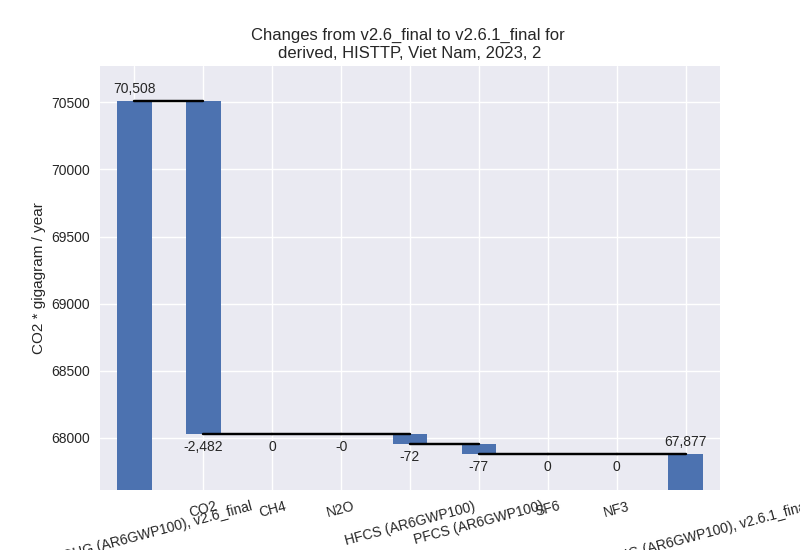 - M.AG: Total sectoral emissions in 2022 are 76164.70
Gg CO2 / year which is 16.2% of M.0.EL emissions. 2023 Emissions have
changed by 3.6% (2648.40 Gg CO2 /
year). 1990-2023 Emissions have changed by 0.2% (149.05 Gg CO2 / year). For 2023 the
changes per gas
are:
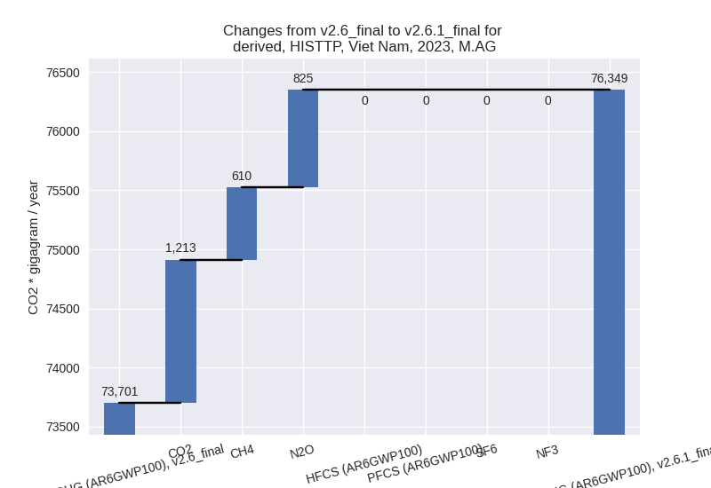
The changes come from the following subsectors:- 3.A: Total sectoral emissions in 2022 are 20015.05 Gg CO2 / year which is 26.3% of category M.AG emissions. 2023 Emissions have changed by 0.9% (183.40 Gg CO2 / year). 1990-2023 Emissions have changed by 0.0% (1.76 Gg CO2 / year).
- M.AG.ELV: Total sectoral emissions in 2022 are
56149.64 Gg CO2 / year which is 73.7% of category M.AG emissions. 2023
Emissions have changed by 4.6%
(2465.01 Gg CO2 / year). 1990-2023 Emissions have changed by 0.3% (147.29 Gg CO2 / year). For 2023 the
changes per gas
are:
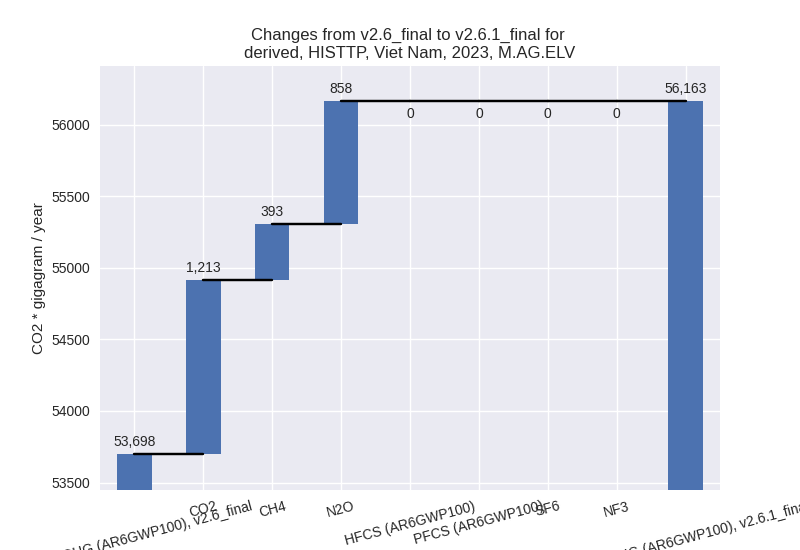
There is no subsector information available in PRIMAP-hist.
- 4: Total sectoral emissions in 2022 are 16818.67 Gg
CO2 / year which is 3.6% of M.0.EL emissions. 2023 Emissions have
changed by -36.7% (-10098.07 Gg CO2
/ year). 1990-2023 Emissions have changed by -44.5% (-8473.39 Gg CO2 / year). For 2023
the changes per gas
are:
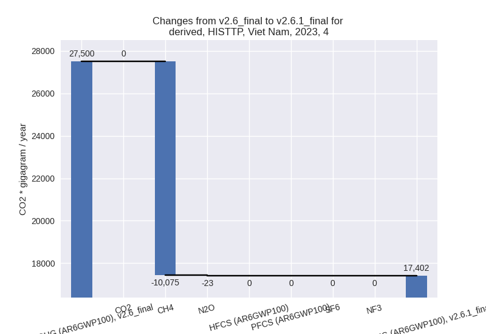
For 1990-2023 the changes per gas are: - 5: Total sectoral emissions in 2022 are 1736.65 Gg
CO2 / year which is 0.4% of M.0.EL emissions. 2023 Emissions have
changed by -4.5% (-96.02 Gg CO2 /
year). 1990-2023 Emissions have changed by -6.5% (-71.99 Gg CO2 / year). For 2023 the
changes per gas
are:
For 1990-2023 the changes per gas are: